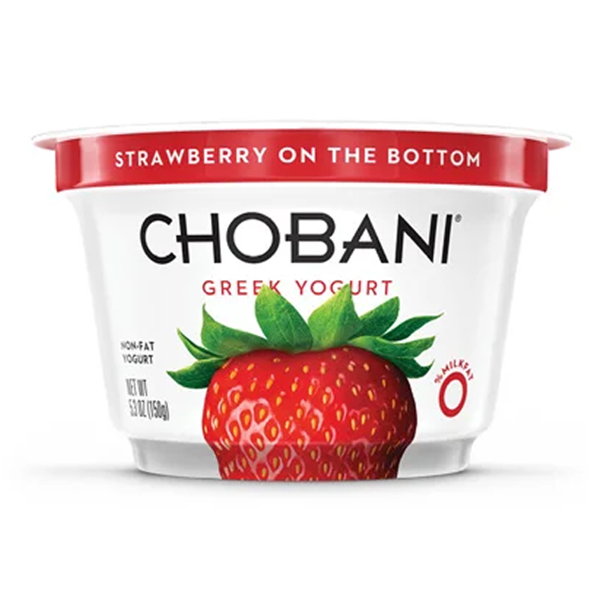
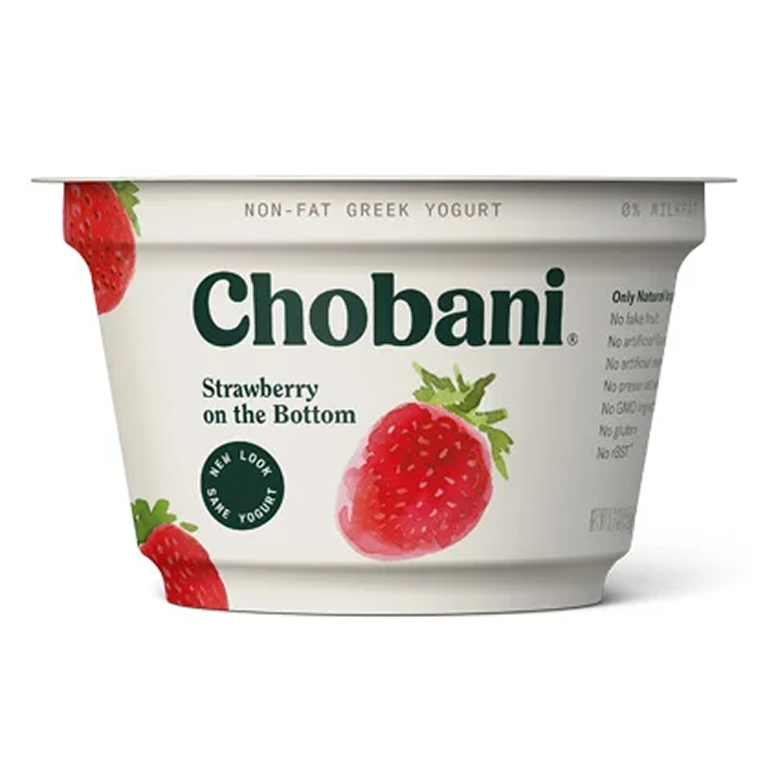
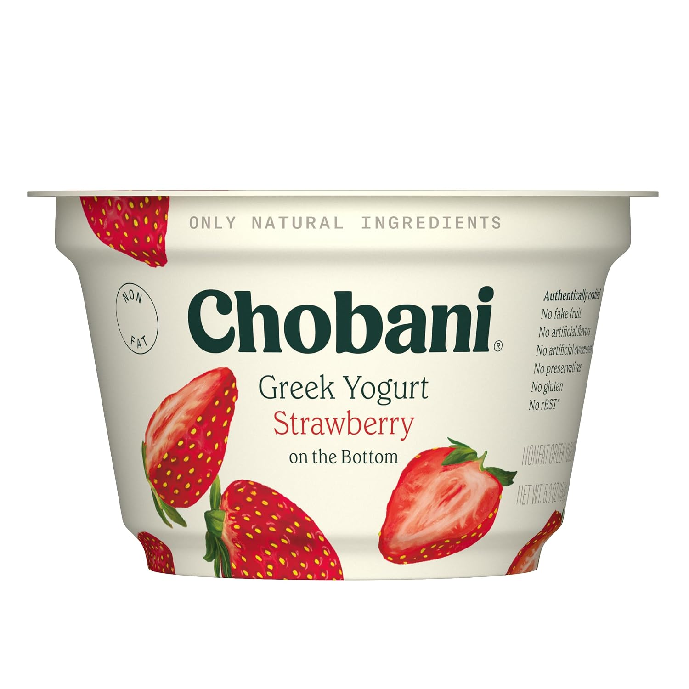
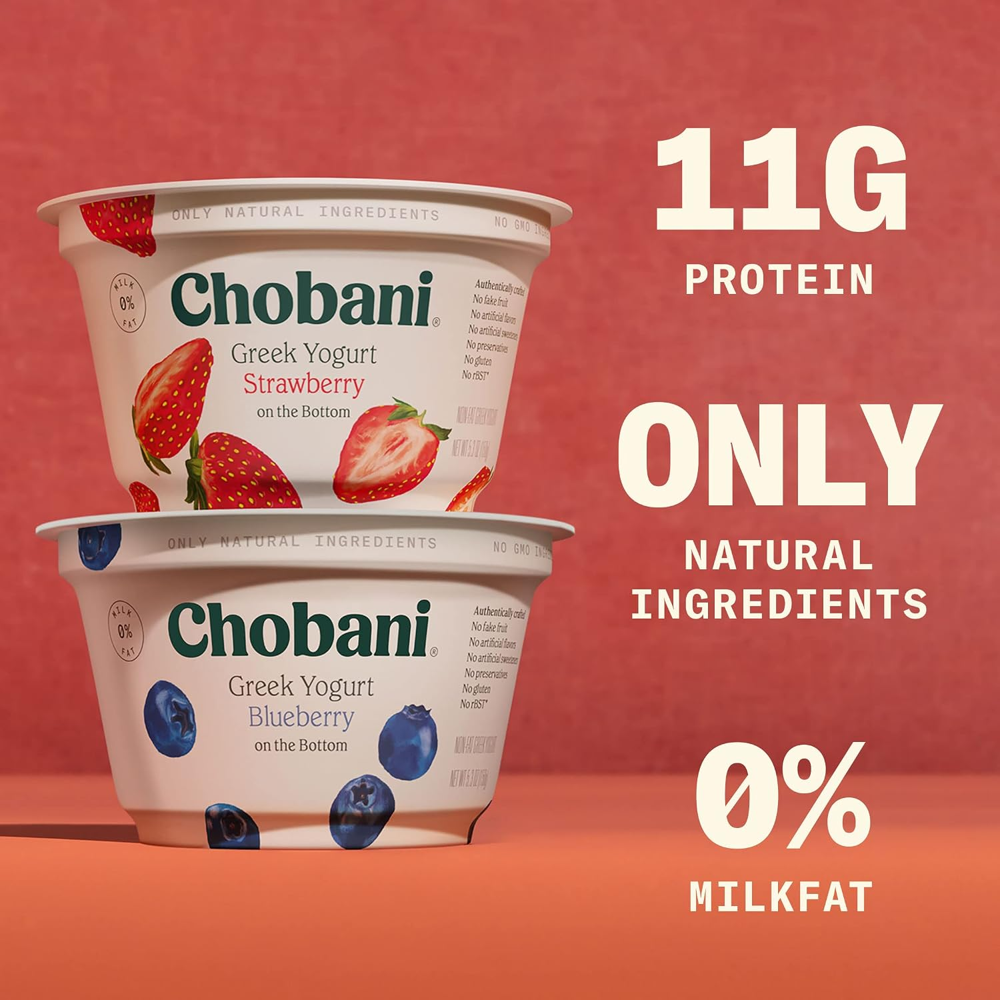
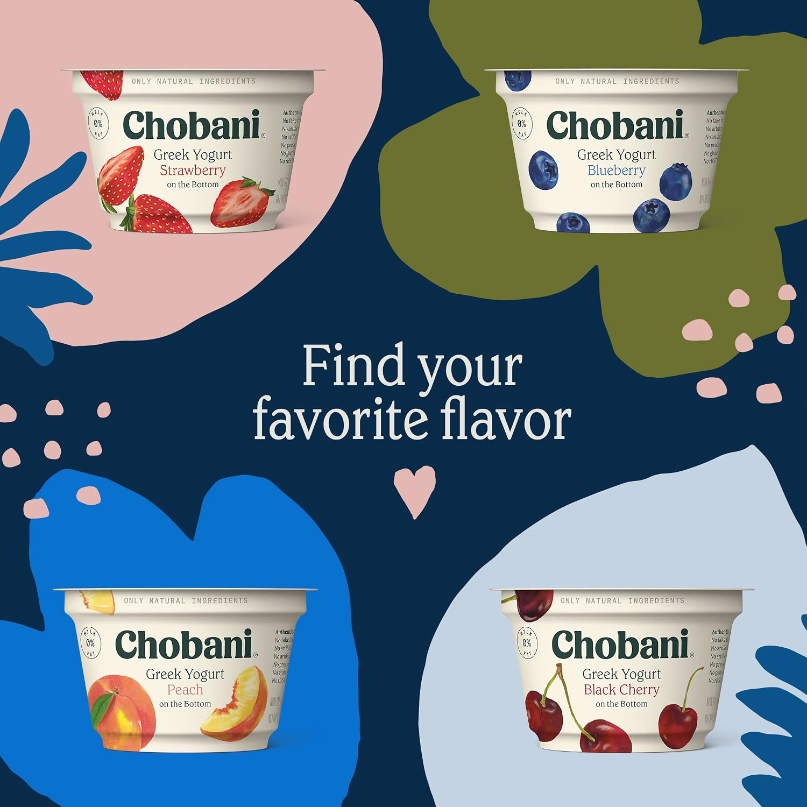
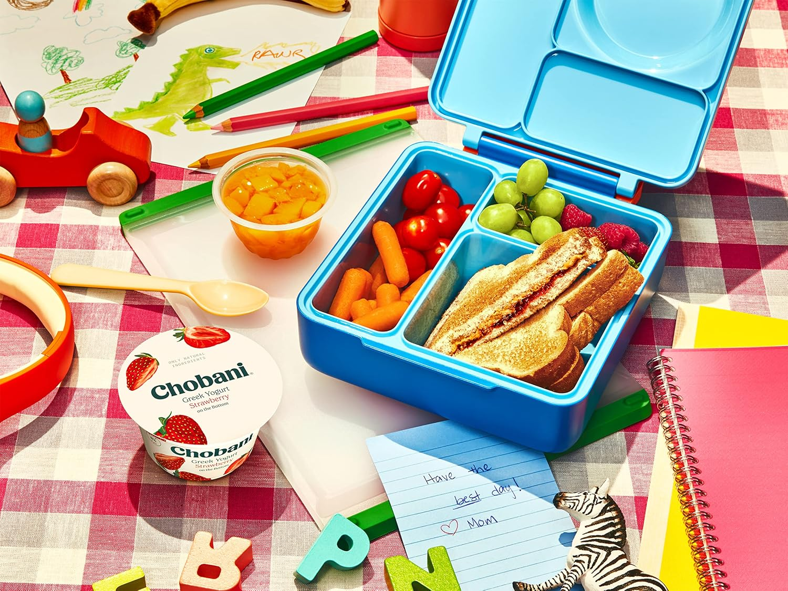
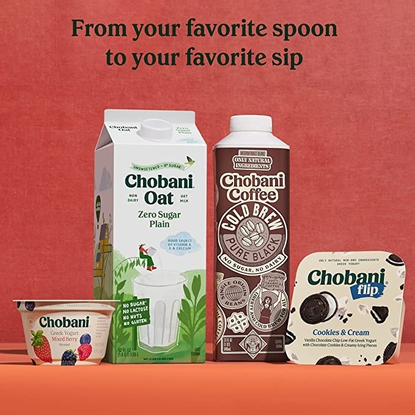
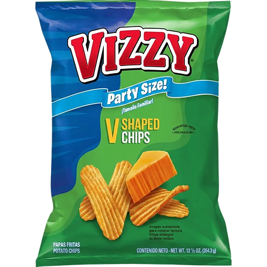

You already paid for the traffic. Vizit shows which products fail the first impression and exactly what to fix.







Point Vizit at any PDP on Amazon or any retailer. It analyzes the page top to bottom and returns a single Product Page Score, so you know exactly how well it converts and what to fix first.
Five visual inputs decide whether a product page converts. Vizit measures each one against the leaders in your category.
Does the first image win the click from the search grid?
Does each secondary image carry the shopper closer to buying?
Do the strongest images appear first, where shoppers actually look?
Does the set cover what your category expects: in use, scale, claims, lifestyle?
Are there enough images to answer every question, and none that repeat?
The hero wins the click. The carousel wins the add to cart. Vizit scores and fixes both.
Every visual scored against category leaders, from hero to last lifestyle shot. Spark AI regenerates the underperformers.
Every new product gets Hero, Carousel, and PDP scores before it goes live. Anything below the standard is fixed first, so nothing reaches the shelf unready to sell.
